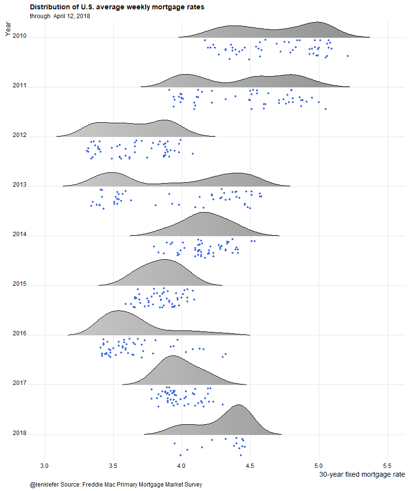

TIME FOR A FUN NEW MORTGAGE RATE CHART.
This one:

We’ll use R to plot a new visualization of mortgage rates.
Let’s make it.
Data
As we did with our majestic mortgage rate plot post we’ll plot mortgage rates using the Freddie Mac Primary Mortgage Market Survey.
We’ll get the mortgage rates data via the Saint Louis Federal Reserve’s FRED database. If you followed my post from back in April of last year you know what we can do if we combine FRED with the quantmod package. It gets even easier if we use tidyquant like we did here.
NOTE ON CODE In order for the animations to work, you’ll need (as of writing) the development version of ggplot2 version 2.2.1.9000, availabe on github LINK. If you don’t want to make the animations, then the current version of ggplot2 available on CRAN should be fine. END NOTE
#####################################################################################
## Load libraries ---- ##
#####################################################################################
library(tidyverse)
library(tidyquant)
library(ggridges)
library(animation) # for the animated gif
#####################################################################################
## Get mortgage data ---- ##
# Can also get direct here: http://www.freddiemac.com/pmms/docs/historicalweeklydata.xls
#####################################################################################
df<- tq_get("MORTGAGE30US",get="economic.data",from="1971-04-01")
df$year<-year(df$date)
knitr::kable(tail(df))| date | price | year |
|---|---|---|
| 2018-06-07 | 4.54 | 2018 |
| 2018-06-14 | 4.62 | 2018 |
| 2018-06-21 | 4.57 | 2018 |
| 2018-06-28 | 4.55 | 2018 |
| 2018-07-05 | 4.52 | 2018 |
| 2018-07-12 | 4.53 | 2018 |
Now that we have our data, we can make our plot. Our plot will use the new raincloud feature in the ggridges package of Claus Wilke. By the way, if you are interested in data visualization, Claus has a very interesting book-in-progress you might want to check out. LINK to dataviz book.. I’m pretty sure I’m going to violate many of the excellent guidelines Claus offers. But note, this post is tagged “fun”.
Custom color palette
As we discussed in our dadbod plot post we’ll use a custom color palette. The code below creates it.
#####################################################################################
## Make Color Scale ---- ##
#####################################################################################
my_colors <- c(
"green" = rgb(103,180,75, maxColorValue = 256),
"green2" = rgb(147,198,44, maxColorValue = 256),
"lightblue" = rgb(9, 177,240, maxColorValue = 256),
"lightblue2" = rgb(173,216,230, maxColorValue = 256),
'blue' = "#00aedb",
'red' = "#d11141",
'orange' = "#f37735",
'yellow' = "#ffc425",
'gold' = "#FFD700",
'light grey' = "#cccccc",
'dark grey' = "#8c8c8c")
my_cols <- function(...) {
cols <- c(...)
if (is.null(cols))
return (my_colors)
my_colors[cols]
}
my_palettes <- list(
`main` = my_cols("blue", "green", "yellow"),
`cool` = my_cols("blue", "green"),
`hot` = my_cols("yellow", "orange", "red"),
`mixed` = my_cols("lightblue", "green", "yellow", "orange", "red"),
`mixed2` = my_cols("lightblue2","lightblue", "green", "green2","yellow","gold", "orange", "red"),
`mixed3` = my_cols("lightblue2","lightblue", "green", "yellow","gold", "orange", "red"),
`grey` = my_cols("light grey", "dark grey")
)
my_pal <- function(palette = "main", reverse = FALSE, ...) {
pal <- my_palettes[[palette]]
if (reverse) pal <- rev(pal)
colorRampPalette(pal, ...)
}
scale_color_mycol <- function(palette = "main", discrete = TRUE, reverse = FALSE, ...) {
pal <- my_pal(palette = palette, reverse = reverse)
if (discrete) {
discrete_scale("colour", paste0("my_", palette), palette = pal, ...)
} else {
scale_color_gradientn(colours = pal(256), ...)
}
}
scale_fill_mycol <- function(palette = "main", discrete = TRUE, reverse = FALSE, ...) {
pal <- my_pal(palette = palette, reverse = reverse)
if (discrete) {
discrete_scale("fill", paste0("my_", palette), palette = pal, ...)
} else {
scale_fill_gradientn(colours = pal(256), ...)
}
}Static plot
The following code creates the static plot.
#####################################################################################
## Static plot ---- ##
#####################################################################################
# filter the data and make some labels
dfp<- filter(df, year >2013) %>%
select(date,price) %>%
# create labels and a factor variables
mutate(rate_label=as.factor(as.character(round(price,2))),
yearf=factor(year(date)),
year=year(date))
#Create a list of dates
dlist<-unique(dfp$date)
# max length
N<-length(dlist)
# @Clauswilke on fixing axis for animation: https://twitter.com/ClausWilke/status/969774047729999872
make_plot_appear <- function(i=25){
plot_data <- filter(dfp, date<=dlist[i])
p<- plot_data %>%
ggplot(aes(y=forcats::fct_reorder(yearf,-year),x=price,color=price,fill=..x..))+
geom_density_ridges(data=dfp,color=NA, fill=NA)+
scale_fill_mycol(palette="grey",name="30-year fixed mortgage rate (%)",discrete=F)+
geom_density_ridges_gradient(rel_min_height=0.01,alpha=0.75,point_color="royalblue",scale=0.9,
jittered_points = TRUE, position = "raincloud") +
guides(color=F,fill=F)+
theme_ridges()+
theme(legend.position="top",
plot.caption=element_text(hjust=0),
legend.key.width=unit(1.25,"cm"))+
labs(x="30-year fixed mortgage rate",y="Year",
title="Distribution of U.S. average weekly mortgage rates",
subtitle=paste("through ",as.character(as.Date(max(plot_data$date)), format="%B %d, %Y")),
caption="@lenkiefer Source: Freddie Mac Primary Mortgage Market Survey")+
scale_y_discrete(expand = expand_scale(mult = 0, add = c(0.5, 0.25))) # drop this if you don't have ggplot 2.2.1.9000 (Development as of 4/12/2018)
return(p)
}
make_plot_appear(N)
Animate it
And we could animate it. One option lets you see the data evolve, while the second just lets you get rained on.
Evolving data
oopt<-ani.options(interval=1/10)
suppressMessages( # if you want to supress ggridges messages during aniamtion loop
saveGIF({for (i in 54:N){
# saveGIF({for (i in 53:75){
g<-make_plot_appear(i)
print(g)
print(paste(i,"out of",N)) # a counter to know when animation loop may end
ani.pause()
}
for (ii in 1:20){
g<- make_plot_appear(N)
print(g)
ani.pause()
}
}, movie.name = "YOURDIRECTORY/rate_cloud.gif", ani.width=840, ani.height=1000) # replace YOURDIRECTORY with a path to where you want to save gif
)Running that will give you this animation:

Raindrops keep falling on my head
make_plot_appear2 <- function(i=25){
plot_data <- filter(df, year >2009) %>% select(date,price) %>%
mutate(rate_label=as.factor(as.character(round(price,2))),
yearf=factor(year(date)),
year=year(date))
p<- plot_data %>%
ggplot(aes(y=forcats::fct_reorder(yearf,-year),x=price,color=price,fill=..x..))+
scale_fill_mycol(palette="grey",name="30-year fixed mortgage rate (%)",discrete=F)+
# Use the new jittered pints and position functions in ggridges::geom_density_ridges
geom_density_ridges_gradient(rel_min_height=0.01,alpha=0.75,point_color="royalblue",scale=0.6,
jittered_points = TRUE, position = "raincloud") +
guides(color=F,fill=F)+
theme_ridges()+
theme(legend.position="top",
plot.caption=element_text(hjust=0),
legend.key.width=unit(1.25,"cm"))+
labs(x="30-year fixed mortgage rate",y="Year",
title="Distribution of U.S. average weekly mortgage rates",
subtitle=paste("through ",as.character(as.Date(max(plot_data$date)), format="%B %d, %Y")),
caption="@lenkiefer Source: Freddie Mac Primary Mortgage Market Survey")+
scale_y_discrete(expand = expand_scale(mult = 0, add = c(0.5, 0.25)))
return(p)
}
saveGIF({for (ii in 1:15){
g<-make_plot_appear2()
print(g)
print(paste(ii,"out of 15"))
ani.pause()
}
}, movie.name = "YOURDIRECTORY/rate_cloud2.gif", ani.width=840, ani.height=1000) # replace YOURDIRECTORY with a path to where you want to save gifRunning that will give you this animation:
Like I said fun.